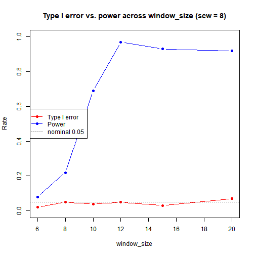
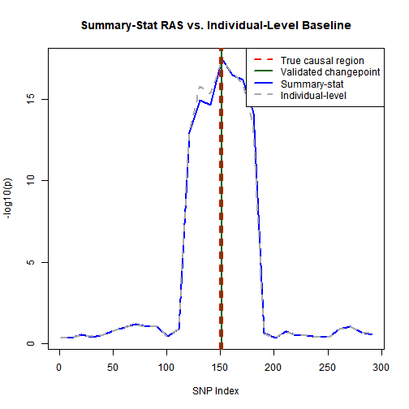

Pilot/tuning run. The main paper-style study is Paper Replication.
Show code
n_snps <- 300
n_disc <- 1000 # discovery cohort, method A (small for speed)
n_targ <- 1000 # target cohort (small for speed)
rho <- 0.8 # AR(1) correlation for LD
# adaptive sliding window
skip1 <- 10 # scan every 10th SNP for speed
skip2 <- 3 # test window sizes in increments of 3
min_window_size <- 3
max_window_size <- 30
# quality control
prune_r2 <- 0.2 # LD pruning threshold
# ridge_lambda removed, breaks N(0,1) null distribution
causal_snps <- c(150, 151, 152)
effect_size <- 0.5
# p-value thresholds
slope_thresh <- 1e-3
davies_thresh <- 1e-3
# reproducibility
base_seed <- 35Show code
# Autoregressive AR(1) matrix with rho = 0.8
# simulates the LD matrix
R_true <- outer(1:n_snps, 1:n_snps, function(i, j) rho^abs(i - j))
# generate n fake patients based on the LD data
sim_genotypes <- function(n, R) {
X <- rmvnorm(n, sigma = R)
X <- round(X) # DNA isn't continuous
pmin(pmax(X, 0), 2) # 0, 1, 2 mutated alleles
}
# run the random simulation
set.seed(base_seed)
X_ref <- sim_genotypes(10000, R_true)
R_emp <- cor(X_ref) # get the empirical LD matrix to use later instead of the real one
# greedy forward pruning, drop SNPs in high LD with a kept SNP
prune_ld <- function(R, thresh) {
keep <- rep(TRUE, nrow(R))
for (i in seq_len(nrow(R) - 1)) {
if (!keep[i]) next
for (j in (i + 1):nrow(R)) {
if (keep[j] && R[i, j]^2 > thresh) keep[j] <- FALSE
}
}
keep
}
prune_filter <- prune_ld(R_emp, prune_r2)
cat("Surviving SNPs after LD pruning:", sum(prune_filter), "of", n_snps, "\n")## Surviving SNPs after LD pruning: 100 of 300Show code
# runs linear regression for every SNP to measure correlation with phenotype y
get_marginal_stats <- function(X, y) {
# Vectorized OLS for massive speedup
yc <- y - mean(y)
Xc <- sweep(X, 2, colMeans(X), "-")
sxx <- colSums(Xc^2)
sxy <- as.numeric(crossprod(Xc, yc))
beta <- sxy / sxx
syy <- sum(yc^2)
rss <- pmax(syy - beta * sxy, 0)
se <- sqrt((rss / (length(y) - 2)) / sxx)
z <- beta / se
z[!is.finite(z)] <- 0
list(beta = beta, z = z)
}
# T_burden = w'Z / sqrt(w'Rw), from problem statement
t_burden <- function(w, Z, R) {
denom <- sqrt(as.numeric(t(w) %*% R %*% w))
if (!is.finite(denom) || denom <= 0) return(0)
as.numeric((t(w) %*% Z) / denom)
}
# summary-stat RAS scan: for each pivotal SNP, find window with max -log10(p)
scan_ss <- function(b_disc, z_targ, R, mask) {
n_snps <- length(b_disc)
sites <- seq(1, n_snps, by = skip1)
sub_windows <- c(0, seq(min_window_size, max_window_size, by = skip2))
if (sub_windows[length(sub_windows)] != max_window_size) sub_windows <- c(sub_windows, max_window_size)
y_profile <- sapply(sites, function(s) {
best_p <- 1
for (ws in sub_windows) {
win_snps <- if (ws == 0) s else max(1, s - ws):min(n_snps, s + ws)
win_snps <- win_snps[mask[win_snps]]
if (length(win_snps) < 1) next
w_sub <- b_disc[win_snps]
z_sub <- z_targ[win_snps]
R_sub <- R[win_snps, win_snps, drop = FALSE]
num <- sum(w_sub * z_sub)
denom <- sqrt(as.numeric(w_sub %*% R_sub %*% w_sub))
if (!is.finite(denom) || denom <= 0) next
t_val <- num / denom
best_p <- min(best_p, 2 * pnorm(-abs(t_val)))
}
-log10(max(best_p, .Machine$double.xmin))
})
list(x = sites, y = y_profile)
}
# NOTE: no num_rep averaging here. method A has fixed disc/targ stats, nothing to resplit
one_rep <- function(true_beta, seed) {
set.seed(seed)
X_d <- sim_genotypes(n_disc, R_true)
X_t <- sim_genotypes(n_targ, R_true)
y_d <- X_d %*% true_beta + rnorm(n_disc, 0, 3)
y_t <- X_t %*% true_beta + rnorm(n_targ, 0, 3)
disc <- get_marginal_stats(X_d, y_d)
targ <- get_marginal_stats(X_t, y_t)
scan <- scan_ss(disc$beta, targ$z, R_emp, prune_filter)
list(scan = scan, X_t = X_t, y_t = y_t, b_disc = disc$beta)
}
# null = no effect, signal = effect at causal SNPs
null_beta <- rep(0, n_snps)
signal_beta <- rep(0, n_snps)
signal_beta[causal_snps] <- effect_sizeShow code
# scw=5 (package default) only gave ~17-20% first-pass acceptance on true signal
# because slope re-check window sits inside the flat top of the plateau
# scw=8 fixes this, acceptance goes to ~100%
detect_peaks <- function(scan, window_size, scw = 8) {
stopifnot(window_size < length(scan$x))
tryCatch({
# first pass: changepoint detection
# use sink() to hide cat() verbose
null_con <- file(nullfile(), open = "wt")
sink(null_con, type = "output")
sink(null_con, type = "message")
cp <- ras_detect(
x = scan$x, y = scan$y,
window_size = window_size,
slope_check_window_size = scw,
slope.p.values.threshold.left = slope_thresh,
slope.p.values.threshold.right = slope_thresh
)
# second pass: local Davies validation
val <- suppressWarnings(ras_validate(
this.result = cp, x = scan$x, y = scan$y,
this.start = 1, this.skip = skip1,
second_window_size = 15, min_signal = 2.5,
p.value.threshold = davies_thresh
))
# stop redirecting output
sink(type = "message")
sink(type = "output")
close(null_con)
list(val = val, candidates = cp$all.changepoints, error = FALSE)
}, error = function(e) {
# ensure sink is turned off even if an error occurs
try({ sink(type = "message"); sink(type = "output"); close(null_con) }, silent = TRUE)
list(val = list(tau_hats = numeric(0)), candidates = NULL, error = TRUE)
})
}Window-size sweep for CPD: Type I error & power
Show code
n_sweep <- 100
ws_candidates <- c(6, 8, 10, 12, 15, 20)
sweep_df <- data.frame(window_size = ws_candidates,
type1 = NA_real_, power = NA_real_, edge = NA_real_)
# test each candidate
for (k in seq_along(ws_candidates)) {
ws <- ws_candidates[k]
# null reps: any detection = type I error
null_res <- suppressWarnings(future_lapply(seq_len(n_sweep), function(s) {
scan <- one_rep(null_beta, seed = 10000 * ws + s)$scan
length(detect_peaks(scan, ws, scw = 8)$val$tau_hats) > 0
}))
# power reps: land on causal region or just trailing edge
power_res <- suppressWarnings(future_lapply(seq_len(n_sweep), function(s) {
scan <- one_rep(signal_beta, seed = 20000 * ws + s)$scan
tau <- detect_peaks(scan, ws, scw = 8)$val$tau_hats
c(center = any(tau >= 130 & tau <= 170),
edge = any(tau >= 185 & tau <= 195) && !any(tau >= 130 & tau <= 170))
}))
sweep_df$type1[k] <- mean(unlist(null_res))
sweep_df$power[k] <- mean(sapply(power_res, function(x) x["center"]))
sweep_df$edge[k] <- mean(sapply(power_res, function(x) x["edge"]))
}
print(sweep_df)## window_size type1 power edge
## 1 6 0.02 0.08 0
## 2 8 0.05 0.22 0
## 3 10 0.04 0.69 0
## 4 12 0.05 0.97 0
## 5 15 0.03 0.93 0
## 6 20 0.07 0.92 0Show code
## Chosen window_size: 12 (scw = 8)Show code
print(sweep_df[sweep_df$window_size == best_ws, ])## window_size type1 power edge
## 4 12 0.05 0.97 0Full run at the chosen window size
Show code
n_null <- 500
null_hits <- unlist(suppressWarnings(future_lapply(seq_len(n_null), function(s) {
scan <- one_rep(null_beta, seed = 100000 + s)$scan
length(detect_peaks(scan, best_ws, scw = 8)$val$tau_hats) > 0
})))
cat(sprintf("\nEmpirical Type I error over %d reps: %.3f\n", n_null, mean(null_hits)))##
## Empirical Type I error over 500 reps: 0.038Show code
# Statistical power test by running signal_beta (patients w/ phenotype at SNPs 150-152)
n_power <- 200
power_res <- suppressWarnings(future_lapply(seq_len(n_power), function(s) {
scan <- one_rep(signal_beta, seed = 200000 + s)$scan
tau <- detect_peaks(scan, best_ws, scw = 8)$val$tau_hats
c(center = any(tau >= 130 & tau <= 170),
edge = any(tau >= 185 & tau <= 195) && !any(tau >= 130 & tau <= 170))
}))
hit_center <- sapply(power_res, function(x) x["center"])
hit_edge <- sapply(power_res, function(x) x["edge"])
cat(sprintf("\nEmpirical power (centered detections) over %d reps: %.3f\n", n_power, mean(hit_center)))##
## Empirical power (centered detections) over 200 reps: 0.935## Edge-only detections (trailing edge, not center): 0.000Results table/figures
Show code
| Metric | Value | Reps |
|---|---|---|
| Type I error | 0.038 | 500 |
| Power | 0.935 | 200 |
Show code
plot(sweep_df$window_size, sweep_df$type1, type = "b", col = "red",
ylim = c(0, 1), xlab = "window_size", ylab = "Rate",
main = "Type I error vs. power across window_size (scw = 8)", pch = 16)
lines(sweep_df$window_size, sweep_df$power, type = "b", col = "blue", pch = 16)
abline(h = 0.05, lty = 3, col = "gray50")
legend("left", legend = c("Type I error", "Power", "nominal 0.05"),
col = c("red", "blue", "gray50"), lty = c(1, 1, 3), pch = c(16, 16, NA))
plot of chunk sweep-plot
Show code
# individual-level RAS for comparison (original method)
indiv_scan <- function(scan, X_t, y_t, b_disc) {
sub_windows <- c(0, seq(min_window_size, max_window_size, by = skip2))
if (sub_windows[length(sub_windows)] != max_window_size) sub_windows <- c(sub_windows, max_window_size)
sapply(scan$x, function(s) {
best_p <- 1
for (ws in sub_windows) {
win_snps <- if (ws == 0) s else max(1, s - ws):min(n_snps, s + ws)
win_snps <- win_snps[prune_filter[win_snps]]
if (length(win_snps) < 1) next
lprs <- X_t[, win_snps, drop = FALSE] %*% b_disc[win_snps]
fit <- suppressWarnings(summary(lm(y_t ~ lprs)))
p <- if (nrow(fit$coefficients) > 1) fit$coefficients[2, 4] else 1
best_p <- min(best_p, p)
}
-log10(max(best_p, .Machine$double.xmin))
})
}
# draw visualization for comparison
rep_out <- one_rep(signal_beta, seed = 300000)
ss_profile <- rep_out$scan
indiv_y <- indiv_scan(ss_profile, rep_out$X_t, rep_out$y_t, rep_out$b_disc)
final <- detect_peaks(ss_profile, best_ws, scw = 8)
plot(ss_profile$x, ss_profile$y, type = "l", col = "blue", lwd = 2,
xlab = "SNP Index", ylab = "-log10(p)",
main = "Summary-Stat RAS vs. Individual-Level Baseline")
lines(ss_profile$x, indiv_y, col = "darkgray", lty = 2, lwd = 2)
abline(v = causal_snps, col = "red", lty = 2, lwd = 2)
if (length(final$val$tau_hats) > 0) {
abline(v = final$val$tau_hats, col = "darkgreen", lwd = 2)
legend("topright",
legend = c("True causal region", "Validated changepoint", "Summary-stat", "Individual-level"),
col = c("red", "darkgreen", "blue", "darkgray"), lty = c(2, 1, 1, 2), lwd = 2)
} else {
legend("topright",
legend = c("True causal region", "Summary-stat", "Individual-level"),
col = c("red", "blue", "darkgray"), lty = c(2, 1, 2), lwd = 2)
}
plot of chunk illustration
Show code
## **Total Knitting Time:** 1564.93 secondsShow code
# NOTE: time with knitr caching